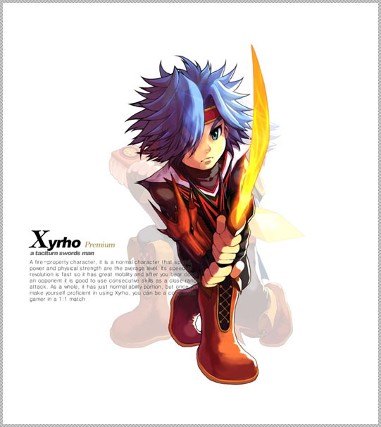
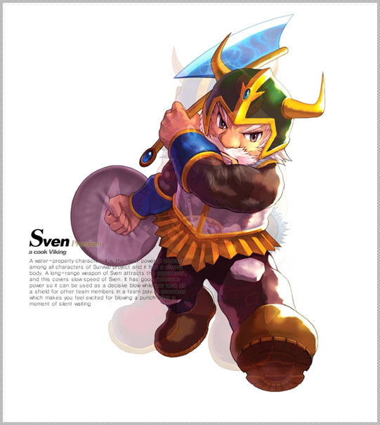

자이로는 말이 없다. 꼭 필요한 말 말고는 한 마디도 하지 않는다. 웃지도 않는다. 원래 그랬던 건 아니다. 만나는 사람마다 밝게 웃으며 인사하던 시절도 있었다. 하지만 고향을 떠난 후 모든 것이 달라졌다.
자이로가 태어나 어린 시절을 보낸 마을은 평화로운 곳이었다. 매일 끼니 걱정이 끊이지 않는 가난한 사람들이지만 그렇기 때문에 서로 도와야 한다는 것을 알고 있었다. 하지만 마을에 커다란 공장이 들어서면서 모든 게 달라졌다. 깨끗하던 시내에 시커먼 썩은 물이 흐르고, 공기는 하얀 빨래를 널어놓지 못할 정도로 탁해졌다. 메뚜기나 잠자리는 모습을 감춘 지 오래고, 아침을 알리는 까치의 경쾌한 깍깍 소리도 더 이상 들을 수 없다. 하지만 가장 많이 변한 건 사람들이다. 밤이고 낮이고 대문이 열려있던 풍경은 완전히 사라졌다. 바쁘게 걷다 마주치는 사람들은 인사도 하지 않는다. 돈 때문에 멱살을 잡는 일은 거의 매일 일어나고, 이제 모든 사람들이 필요한 것보다 더 많은 것을 원한다.
자이로는 어렸을 때 부모를 잃었다. 하지만 할머니와 둘이 살면서도 외롭지 않았다. 마을 사람들은 한 명도 빠짐 없이 엄마 아빠의 장례식에 참석했고, 노인과 소년을 지극 정성으로 돌봤다. 눈발이 날리는 날이면 어김없이 장작 다발이 문 앞에 놓여졌고, 자기들의 식사는 거르기 일쑤면서도 돌아가면서 챙겨주는 자이로의 끼니는 빼먹지 않았다. 마을 사람들 모두가 자이로의 엄마였고 아빠였다. 밝고 상냥한 자이로에게 마을 아이들은 전부 동생이나 다름없었다.
그렇기 때문에 사람들이 달라진 걸 가장 먼저 느꼈고, 상처도 많이 입었다. 자이로는 마음을 닫기 시작했다. 사람들에 대해 기대하지 않았다. 상처받고 싶지 않았기에 기대하지 않았다. 아직 어리지만 영리하고 날렵한 자이로가 할 수 있는 일은 제법 있었다. 할머니와 두 식구 입에 풀칠하는 정도야 많이 힘들지는 않았다. 하지만 외로웠다. 아닌 척 했지만, 누구든 손을 내밀어주길 바라고 있었다.
그러다 할머니가 돌아가시고, 아무의 도움도 없이 혼자 장례를 치르며 자이로는 마을을 떠나기로 결심했다. 조금의 미련도 없었고, 자이로를 붙잡는 사람 역시 아무도 없었다. 자이로는 칼 한 자루를 벗삼아 곳곳을 여행하고 다녔다. 수많은 모험을 겪으며 실력을 쌓아갈 수록 슬픈 표정은 우울한 표정으로, 또 무표정으로 바뀌어 갔다.
소원을 들어주는 구슬 얘기를 처음 들었을 때 자이로는 아무 신경쓰지 않았다. 그런 허황된 이야기에 정신을 팔리기에는 세상을 너무 많이 알고 있었다. 하지만 자꾸 생각이 났다. 그 이야기를 들은 지 꽤 오랜 시간이 지났는데도 미진한 기분은 사라지지 않았다. 자이로는 마침내 결심했다. 구슬을 찾아 나서기로. 그리고 마을로 돌아갈 것이다. 어쩌면 다시 웃을 수 있게 될지도 모른다.

스벤은 바이킹의 왕이다. 거친 바이킹들을 휘어잡는 호탕한 성격과 카리스마, 그리고 누구도 따라올 수 없는 도끼 실력을 가지고 있으며, 기분 좋은 일이 있든 마음에 안 드는 일이 있든 일단 괴팍하게 웃고 보는 버릇이 있다. 스벤이 한 번 웃었다 하면 무슨 일이 벌어질지 모르는 법, 동료들은 일단 긴장한다.
어울리지 않게 스벤의 취미는 요리다. 스벤의 도끼 실력은 순전히 생선을 다듬다가 단련된 거라는 얘기가 있을 정도다. 둔탁한 도끼날로 생선 비늘을 벗겨내고 포를 뜨는 모습을 한 번이라도 본다면 그 얘기가 전혀 근거없는 얘기가 아니라는 걸 알 수 있을 것이다.
하지만 스벤이 잘 하는 건 거기까지다. 완벽하게 다듬은 생선을 가지고 기껏 만들어내는 게 겉은 타고 속은 안 익은 튀김, 바닷물보다 더 짠 수프, 이빨 부러뜨리기 딱 좋은 딱딱한 파이 같은 것들이다.
동료들은 반쯤은 안스러워서, 또 반쯤은 겁을 먹어서 별 불평 없이 요리를 먹었다. 하지만 어느 날인가 그들의 인내심도 드디어 한계에 이르렀다. 막내 바이킹 호콘이 숟갈을 내던진 게 신호라도 되는 것처럼, 모두 한꺼번에 불평을 터뜨렸다. 그리고는 겁에 질렸다. 하지만 모두의 예상과는 달리 스벤은 화를 내지 않았다. 예의 호탕한 웃음도 없었다. 스벤은 말없이 현창으로 내려가 선실에 틀어박혔다.
화를 낼까 겁에 질렸던 동료들이 오히려 스벤을 걱정하기 시작했다. 하지만 스벤은 먹을 것도 마실 것도 없는 선실에서 며칠이나 버텼다. 그리고 꼬박 사흘만에 마침내 문을 박차고 나왔다. 수염이 텁수룩하고 뺨이 훌쭉해서 초췌해졌지만 눈은 반짝였다.
"나 요리 수업을 떠날거야! 토르신에 걸고 맹세하지만, 최고의 요리사가 되기 전까지는 절대 돌아오지 않아."
감히 스벤을 말리고 나설 배짱이 있는 사람은 아무도 없었다. 누가 나섰더라도 아무 것도 달라지지 않았을 것이다. 소귀에 경 읽기가 따로 있나, 스벤은 누구의 말도 들으려고 하지 않았을 것이다.
스벤은 달랑 도끼 한 자루만 지고 혼자 여행을 떠났다. 그리고 많은 모험을 겪었다. 하지만 늘어가는 건 도끼 실력뿐. 냄비 대신 사용하는 투구가 그을리고 또 그을려서 새카매졌는데도 스벤의 요리 실력은 전혀 늘지 않았다. 이래가지고는 돌아갈 수가 없었다. 달라지지 않은 모습으로는 면목이 없었다. 스벤이 오브에 대한 소문을 들은 건, 고향에 다시 돌아가는 걸 거의 포기한 때였다. 진정으로 원하는 거라면 어떤 소원이든 단 한가지를 들어준다는 오브 이야기는 지친 스벤에게 다시 한 번 힘을 내개 해 주었다.